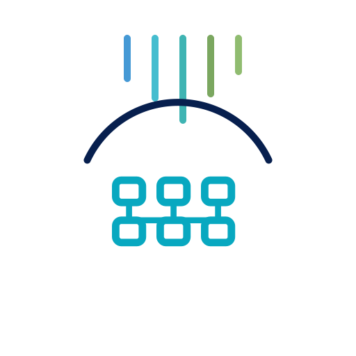
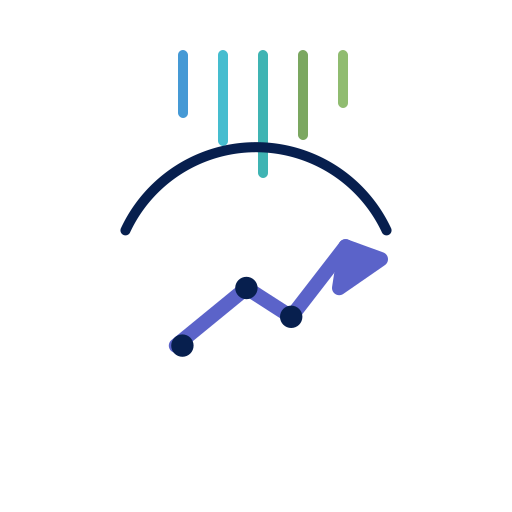
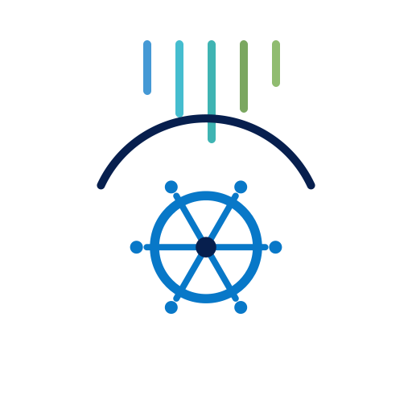
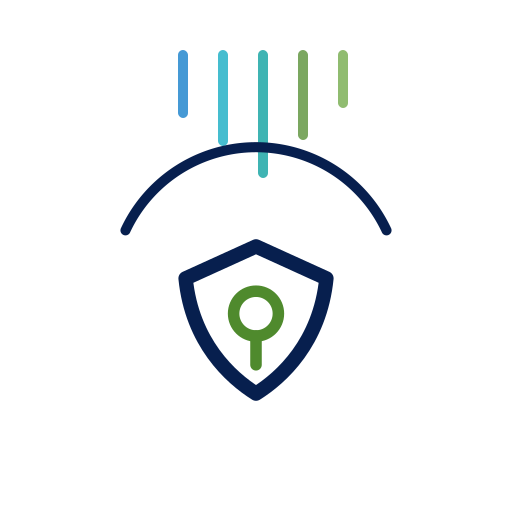
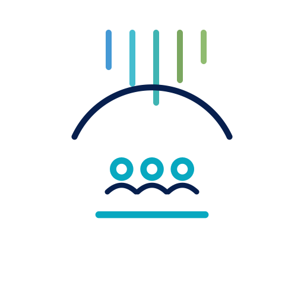
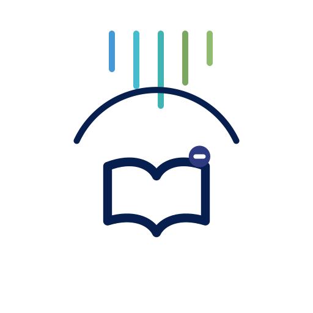

VN
Sở hữu Việt Nam
Quyết định, năng lực và giá trị dài hạn được xây từ Việt Nam.


EastBridge là doanh nghiệp 100% vốn Việt Nam, do phụ nữ lãnh đạo, xây dựng năng lực ERP, CRM, AI, tự động hóa và tích hợp theo lộ trình có kiểm soát.
100% vốn Việt Nam, do phụ nữ lãnh đạo, với mục tiêu phát triển sản phẩm, tài sản trí tuệ và năng lực triển khai có thể kiểm chứng.
Quyết định, năng lực và giá trị dài hạn được xây từ Việt Nam.
Tạo cơ hội lãnh đạo, học tập và nghề nghiệp công nghệ cho phụ nữ và người trẻ.
Ý tưởng được quản trị qua prototype, pilot, bằng chứng chất lượng và lộ trình thương mại hóa.
Hiểu bối cảnh địa phương và xây mô hình có khả năng mở rộng trong ASEAN.
Chúng tôi kết hợp hiểu biết quy trình nghiệp vụ, năng lực triển khai thực tế và kiến trúc công nghệ hiện đại. Trọng tâm là kết quả đo lường được, hệ thống dễ vận hành và niềm tin dài hạn.
CRM, Books, Inventory, Desk, People, Projects, Analytics, Creator, FSM và kế hoạch adoption.
Business ByDesign, S/4HANA Cloud Public Edition, Business One, cải tiến quy trình và AMS.
Kết nối Zoho, SAP, Oracle, Microsoft 365, Salesforce, POS, hóa đơn điện tử, logistics và hệ thống tùy chỉnh.
Cố vấn lãnh đạo ảo, đào tạo doanh nghiệp, workshop sinh viên miễn phí và hợp tác đại học.
Năng lực được xây dựng quanh triển khai, tích hợp, tự động hóa vận hành và kết quả kinh doanh đo lường được.
Thiết kế quy trình, quản trị rollout, hỗ trợ ứng dụng doanh nghiệp và adoption người dùng.
Zoho CRM, Bigin, Desk, SAP CX/C4C và adoption quy trình bán hàng/dịch vụ.
API, middleware, portal, migration và kết nối hệ thống có quản trị.
Workflow automation, Deluge, báo cáo hỗ trợ AI, phê duyệt, cảnh báo và hỗ trợ quyết định.
Fit-gap, quản trị giải pháp, blueprint tích hợp, phối hợp vendor và tiêu chuẩn mở rộng.
Đánh giá rủi ro, kiểm soát, liên tục kinh doanh, rà soát chính sách và Virtual CISO.
CRM, tài chính, HR, hỗ trợ, FSM và vận hành.
Full-stack, tích hợp, workflow automation, Deluge và triển khai kỹ thuật.
Mục tiêu năm chứng nhận functional và năm technical/product.
Hỗ trợ tiếng Việt và tiếng Anh với góc nhìn triển khai khu vực.
Dịch vụ hiện có được tách rõ khỏi pilot và ý tưởng tương lai để tránh cam kết quá mức.

Vận hành doanh nghiệp, không vận hành giấy tờ.
Dịch vụ hiện cóSẵn sàng tích hợp theo phạm vi với Zoho, SAP, Oracle, Microsoft 365, Salesforce và các nền tảng bên thứ ba được phê duyệt.Nền tảng kết nối cho các quy trình kinh doanh cốt lõi.
Lộ trình đã xác thựcSẵn sàng tích hợp theo phạm vi với Zoho, SAP, Oracle, Microsoft 365, Salesforce và các nền tảng bên thứ ba được phê duyệt.
Quan hệ khách hàng, kỷ luật pipeline và workflow tăng trưởng.
Thử nghiệm / gần hạnSẵn sàng tích hợp theo phạm vi với Zoho, SAP, Oracle, Microsoft 365, Salesforce và các nền tảng bên thứ ba được phê duyệt.Mẫu tích hợp cho nền tảng doanh nghiệp và hệ thống tùy chỉnh.
Thử nghiệm / gần hạnSẵn sàng tích hợp theo phạm vi với Zoho, SAP, Oracle, Microsoft 365, Salesforce và các nền tảng bên thứ ba được phê duyệt.
Dashboard, tín hiệu dữ liệu và hỗ trợ quyết định thực tế.
Thử nghiệm / gần hạnSẵn sàng tích hợp theo phạm vi với Zoho, SAP, Oracle, Microsoft 365, Salesforce và các nền tảng bên thứ ba được phê duyệt.
Mẫu định danh, phân quyền và kiểm soát cho hệ thống kết nối.
Thử nghiệm / gần hạnSẵn sàng tích hợp theo phạm vi với Zoho, SAP, Oracle, Microsoft 365, Salesforce và các nền tảng bên thứ ba được phê duyệt.
Hành trình nhân viên, HR workflow và hiển thị lực lượng lao động.
Lộ trình đã xác thựcSẵn sàng tích hợp theo phạm vi với Zoho, SAP, Oracle, Microsoft 365, Salesforce và các nền tảng bên thứ ba được phê duyệt.
Learning track, chương trình academy và minh chứng năng lực.
Lộ trình đã xác thựcSẵn sàng tích hợp theo phạm vi với Zoho, SAP, Oracle, Microsoft 365, Salesforce và các nền tảng bên thứ ba được phê duyệt.Văn hóa kinh doanh Việt Nam coi trọng niềm tin, demo thực tế, ngôn ngữ địa phương, phạm vi rõ ràng, hỗ trợ đáng tin cậy và quan hệ dài hạn. EastBridge phản ánh các ưu tiên này trong cả thông điệp và triển khai.
EastBridge đang xây dựng năng lực nghiên cứu, sản phẩm và tài sản trí tuệ có kỷ luật quanh các vấn đề khách hàng thực tế.
Khám phá có cấu trúc, kiến trúc, nguyên mẫu, pilot và năng lực sản phẩm tái sử dụng.
Khám phá R&D →Quản trị mã nguồn, quyền sở hữu sản phẩm, nhãn hiệu, quyền phần mềm và bằng chứng thương mại.
Khám phá Đổi mới Việt Nam →Kiến trúc hiệu quả, AI tương xứng, kỷ luật vòng đời và đo lường minh bạch.
Khám phá công nghệ xanh →Hãy chia sẻ quy trình, hệ thống và ưu tiên hiện tại. Chúng tôi sẽ đề xuất bước tiếp theo có kiểm soát, phạm vi rõ ràng và lộ trình triển khai thực tế.